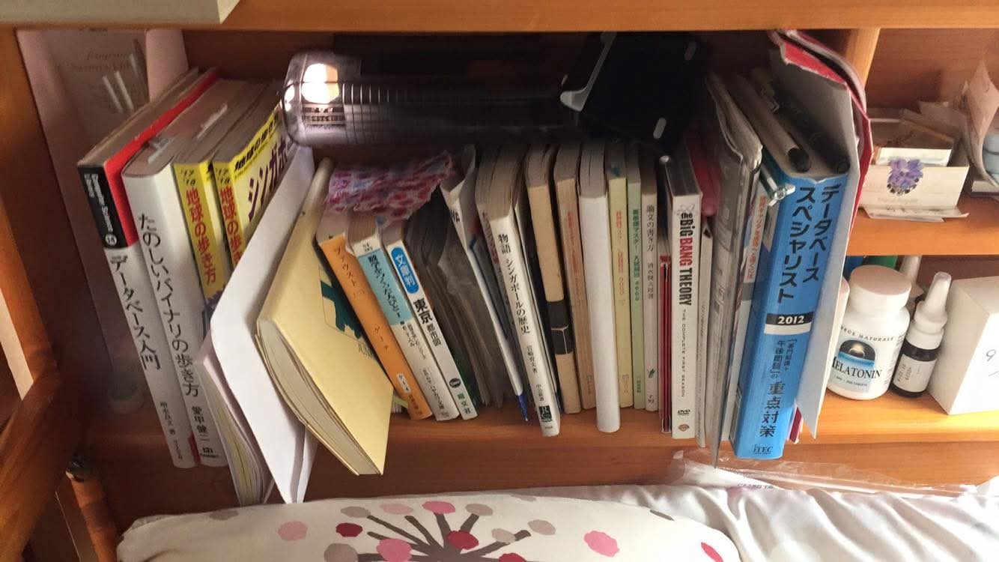

松本志人氏と日本の70年代と魔女と私の音楽的ルーツとカルト
なぜか少し音楽的ルーツの話をしたくなった。0歳からピアノを練習してきたので一番基礎にはピアノや西洋音楽があると思うのだけれど、もうちょっと違う流れの話が今はしたい。
太平洋戦争があった時に、世界中で色んな動きがあった。コンピュータが生まれたのも、第二次世界大戦の暗号化技術の副産物だ。電子音楽も第二次世界大戦時下のイギリスで生まれた。戦後、アメリカのアングラで爆発的に伸びて、一つの大きなジャンルにまで成長した。第二次世界大戦がなかったら、皮肉なことにいまみんなが喜んで聞いている素敵なPOPsは何も生まれなかった。
70年代のアメリカで、当時のナウでヤングなお金のない若者達が、電子音楽を盛り上げて一大ジャンルにまで築き上げた。808（エイトオーエイト）なんていう機会もこの頃に生まれて支持された。今でもPOPsの中には808の音がわざとオマージュも込めて入っていたりする。
この70年代のアメリカでのムーブメントは、結構東洋思想を取り入れている点がおもしろい。鈴木大拙という日本人の哲学者がいて、彼はアメリカのアングラなヤングたちにすごい人気があった。鈴木大拙先生は禅なんかの研究者だ、つまり、実は現代のPOPsは禅の流れを汲んでいる、とも言える。
私はこのあたりにある文化的な混雑を紐解いたり、原始的な音楽からの連続を見たりするのが学生時代から大好きだったので、昼にはパイプオルガンを弾いて、夜にはクラブにいてアマチュアDJ達と連んでいた。
パイプオルガンは、東洋的な音楽が西洋的な12平均律に育っていく時のちょうど接点のところにあった楽器だ。
808などの電子楽器は、逆に、西洋的な12平均律から東洋の方向に全力疾走した時に生まれた楽器だ。
この円環が私は好きだった。昼から夜に、毎日毎日夜から昼に、音楽の洋の東西をグルグルグルグル回り続けていた。
70年代のアメリカも、70年代の日本も、文化的に私には引き付けられる何かがあった。忘れ物を70年代に残してきたような気がしていた。
マイナーなアーティストに松本志人氏というラッパーがいる。最近も話題だった松本人志氏とよく似た名前だけど別人だ。私は松本志人氏のある作品が物凄く好きだ。
物凄く、だ。そもそも、日本語とラップの相性がいいと私は思っている方だ。お経なんかラップじゃない？平安時代にはお坊さんはロックスターだった。伝統にすらあっていると思う。
アヤワスカ、という怪しいタイトルなのだけど、東大の五月祭で撮ったライブ映像が筆舌に尽くしがたく大好きで、聴いてるだけでトリップする。
伝説級…、
写真は、私が最も70年代っぽく生活していた時の物だ。学部生で、四谷三丁目のシェアハウスに住んでいた。男女12人で小さな一戸建てに住んでいて、私は万一の安全の為に二段ベッドの上にいて梯子は外していた。猫みたいに飛び乗ればベッドに梯子はいらない。いつも誰かがいたので逆に変な事は起こらない。憧れは実行してみて、あ、そんなにいいばかりでもないな、と悟った。  ← Back to Blog